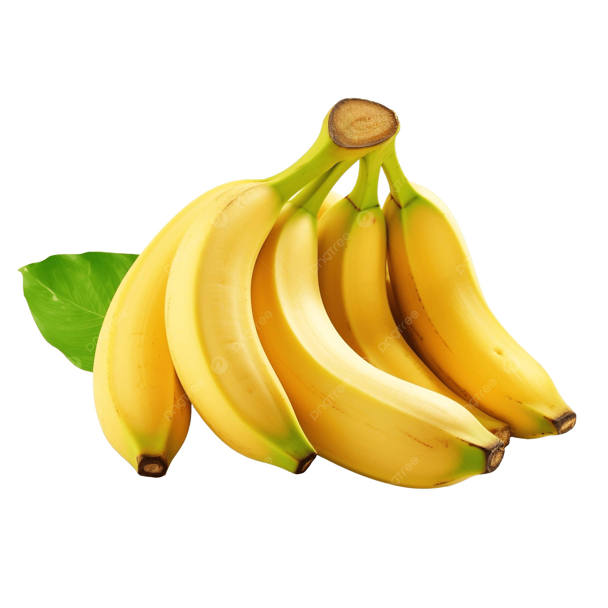
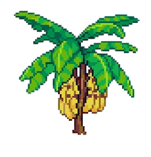

Pisang
💡 Fakta-fakta tentang Pisang! 💡
Pisang sebenarnya ialah buah beri dari segi botani.
Pokok pisang bukan pokok sebenar, ia ialah herba terbesar di dunia.
Pisang kaya dengan kalium (potassium) yang baik untuk jantung dan otot.
Kulit pisang boleh digunakan sebagai baja semula jadi untuk tanaman.
Pisang berasal dari Asia Tenggara dan kini ditanam di seluruh dunia tropika.
🌱 Cara menanam pokok Pisang 🌱

Langkah-Langkah:
- Gali tanah yang gembur dan subur.
- Tanam anak pokok pisang ke dalam lubang.
- Siram air secukupnya setiap hari.
- Letak di tempat yang banyak cahaya matahari.
- Buang tunas kecil yang tumbuh berlebihan.